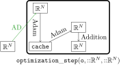
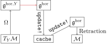
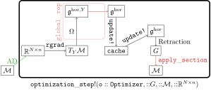

optimizers
adam-optimizer


adam-optimizer: Schematic representation of the Adam optimizer. The first Adam step updates the first and second moments, and the second Adam step outputs the final velocity.
light: PDF · SVG · PNG 150 · 300 · 600


dark: PDF · SVG · PNG 150 · 300 · 600


general-optimization


general-optimization: Schematic visualization of an optimizer step on a manifold: the gradient is mapped to the horizontal component, updated with the cache and retracted.
light: PDF · SVG · PNG 150 · 300 · 600


dark: PDF · SVG · PNG 150 · 300 · 600


general-optimization-with-boundary


general-optimization-with-boundary: Schematic visualization of neural network optimizers to homogeneous spaces.